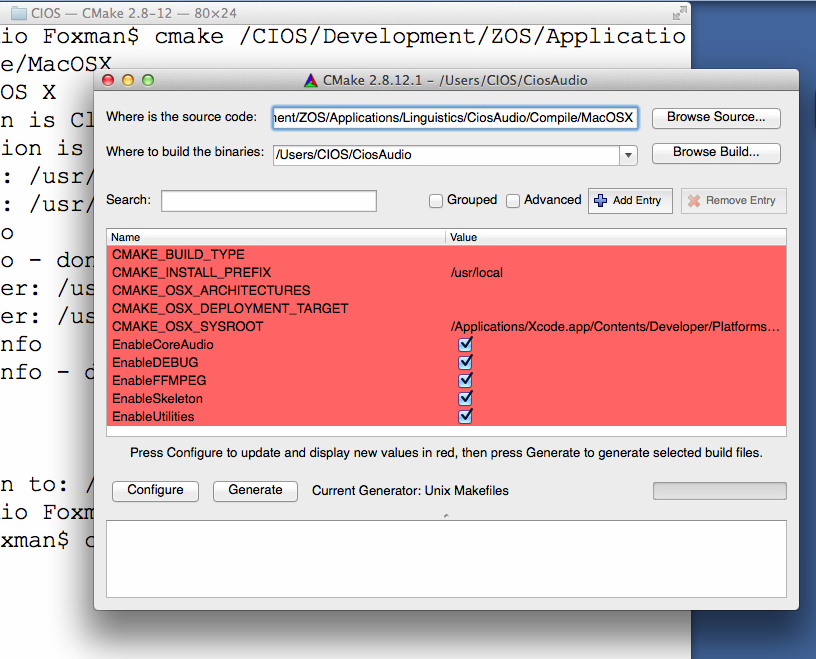
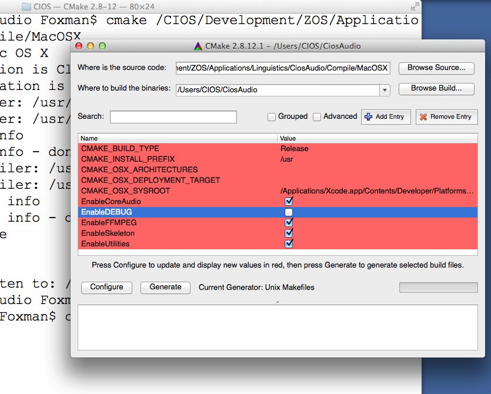
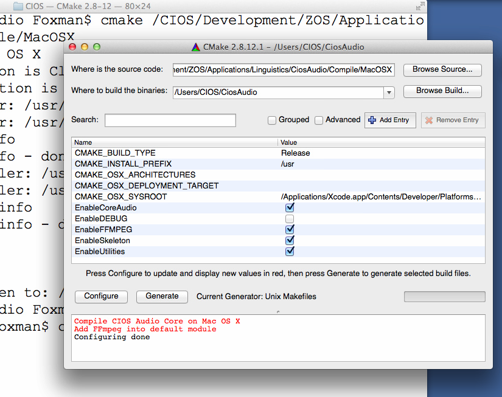
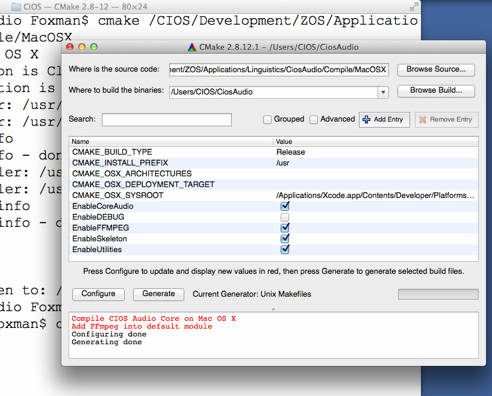

Apple Mac OS X平台編譯
編譯CIOS Audio Core函式庫
在環境已經配置好的狀況下，編譯CIOS Audio Core是相當簡單的：|
mkdir BuildCiosAudioCore |
設定細部
如果您需要指定編譯的細節，我們建議您使用cmake-gui，如果您希望可以完全透過參數指定編譯參數，請到CMake官方網站位址《http://www.cmake.org》，參考cmake相關的使用細節。|
cd Somewhere/Temporary
mkdir CiosAudio |

接下來改變您所需要改變的設定：

按下《Configure》：

按下《Generate》：

然後：
|
cd CiosAudio |
修改內定的Namespace
CIOS Audio Core的內定Namespace是CiosAudio，您可以透過以下方式修改Namespace：|
cd Somewhere/Temporary
mkdir CiosAudio |
Utilities及FFmpeg的設定
如果您想要使用FFmpeg的功能，Utilities的功能必須打開。編譯使用CIOS Audio Core的應用程式
編譯應用程式必須與libCaCore.a鏈結，此外由於使用Apple Core Audio作為音訊系統的底層核心，您必須與以下四個Framework鏈結：
- CoreAudio
- CoreServices
- AudioUnit
- AudioToolBox
此外如果有使用FFmpeg，您必須弄清楚您的FFmpeg需要跟哪些額外的函式庫鏈結，詳細請見《FFmpeg函式庫編譯》，一般而言有以下幾個：
- avcodec
- avformat
- avutil
- swresample
- swscale
- iconv
- z
- bz2
- mp3lame
- twolame
- gsm
如果您不是那麼清楚需要跟哪些函式庫鏈結，那麼，多嘗試及多向FFmpeg使用族群發問，應該是個比較好的解決方式。
一般程式
使用函式庫
在您的程式編譯檔當中，加入include path及lib path的設定，並且加上-lCaCore的設定即可。箝入您的程式
您只要將以下目錄的所有hpp及cpp檔全部加入您的程式計畫檔中即可：|
CiosAudio/*.hpp |
此外，記得加入FFmpeg所需要的函式庫以及路徑設定。
Qt
使用函式庫
在您的Qt程式當中，計畫檔的PRO檔中，加入下面這幾行即可：|
INCLUDEPATH += ${WHEREVER_CIOS_AUDIO_INCLUDE_PATH} |
此外，記得加入FFmpeg所需要的函式庫以及路徑設定。
箝入Qt的程式
在您的Qt程式當中，計畫檔的PRO檔中，加入下面這幾行即可：|
include ($${PWD}/CiosAudio/CiosAudio.pri) |
此外，記得加入FFmpeg所需要的函式庫以及路徑設定。